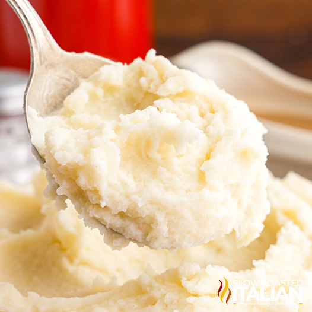

Basic Mashed Potatoes

Description
This mashed potato recipe is perfect if you're looking for good,
old-fashioned mashed potatoes. Made with Idaho potatoes, milk, butter,
and optional garlic, this go-to recipe makes a classic holiday dish.
Learn how to make mashed potatoes that come out smooth, creamy,
and delicious every time. Serve with gravy or extra butter on top.
Ingredients
- 2 pounds baking potatoes, peeled and quartered
- 3 cloves garlic, peeled, or to taste (Optional)
- 1 cup milk
- 2 tablespoons butter
- salt and ground black pepper to taste
Steps
- Preheat the oven to 350 degrees F (175 degrees C).
- Place flour in a shallow plate or bowl and season with salt and pepper to taste.
Put bread crumbs in another shallow plate or bowl and beat eggs in another bowl.
- Dredge chicken piece by piece in the flour, then the egg, then the bread crumbs,
until all pieces are coated.
- Pour oil into a large baking dish; add the breaded chicken thighs
and sprinkle with paprika to taste.
- Bake in the preheated oven for 30 minutes, then turn pieces over and bake for another 30 minutes.
Remove from the oven and drain on paper towels.
- Serve hot and enjoy!